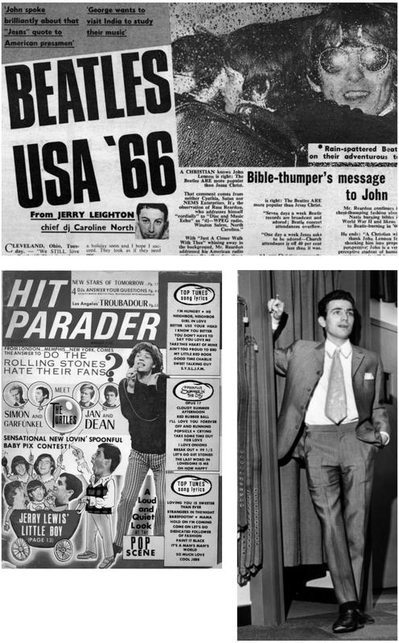
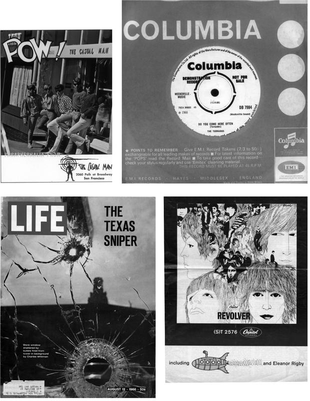

Do You Come Here Often? Joe Meek, Gay Rights and a Summer of Violence


‘Johnny’s radio is on: pouring out its mad, maddening cacophony, sounds ripped from the frayed edges of contemporary despair, often the slurred despair of those who are, emotionally, eternally children: who feel savagely but don’t understand. Now the Rolling Stones are conveying the sound of Johnny’s anguish, speaking of the lonely blackness inside; and convoluted bastard sounds spawn convoluted bastard sounds, not finished, leading to others, also unfinished.’
JOHN RECHY, Numbers, 1967
It was summer, and the time was right. In New York, temperatures were down slightly from the almost unbearable 39ºC peaks of June and July. On 1 August, the city was boiling again as the temperature soared once again to over 30ºC. In Britain, the heatwave that had occurred at the end of June had dissolved into a more familiar pattern: changeable weather, with frequent rain and the occasional hot day.
The charts favoured songs that caught the summer mood of relaxation, escape, some kind of surcease. On 1 August, the top two US singles were throwbacks, basic party records: Tommy James and the Shondells’ ‘Hanky Panky’ and the Troggs’ ‘Wild Thing’. Coming up fast were Bobby Hebb’s ‘Sunny’, a hang-loose, vibes-driven tune that became an almost instant standard, and Billy Stewart’s funky bebop reworking of ‘Summertime’.
The fastest riser was ‘Summer in the City’, the fifth single by the Lovin’ Spoonful, which went from #21 to #7 in the Billboard chart of 30 July. This would be the American song of the summer, reaching #1 on 13 August and staying there for three weeks. By the end of the month, there would be four sunny summer songs – ‘Summer in the City’ at #1, ‘Sunny’ at #2, Donovan’s ‘Sunshine Superman’ at #5 and ‘Summertime’ at #10 – in the US Top 10, just as the temperature reached 32ºC in New York.
‘Summer in the City’ offered momentary relief from the unbearable heat. From the opening two-note lick, it was tougher than anything the Lovin’ Spoonful had yet recorded, with an insistent riff, ringing guitars and pounding drums. In the breaks, all the instruments faded out; while dancers paused in mid-spin, they heard electric drills and a variety of car horns – the inescapable sounds of the city.
In the UK, the beginning of the month saw the afterglow of England winning the FIFA World Cup for the first and, so far, only time, as the host country. While the celebrations continued, the Who marked the occasion in their own way. Headlining the Sixth National Jazz and Blues Festival at Windsor, they kicked in the footlights and threw microphones around; the show ended in utter chaos. Was this, as one pop paper put it, ‘the ultimate in pop violence’?
In Britain, the #1 record on that day was Chris Farlowe’s ‘Out of Time’, the first major hit for the R&B pioneer. Written by Mick Jagger and Keith Richards and released on Andrew Loog Oldham’s Immediate Records, the song was a putdown cloaked in a sweet, string-enhanced melody. ‘You’re obsolete, my baby,’ Farlowe sang: in the modernist demand for perpetual novelty, even personal relationships were rendered throwaway. At #4 was the previous #1, Georgie Fame’s ‘Get Away’, a hymn to holiday escapism with a novelty horn curlicue that betrayed the song’s origin in an advertising jingle. Even Fame’s smoky voice and deep immersion in soul and jazz – with a multiracial band and his residency at the Flamingo Club he was a major interpreter and populariser – couldn’t rescue the song’s slightness. Much more substantial was the Kinks’ ‘Sunny Afternoon’, still at #5.
This was the fourth and the greatest in the Kinks’ contemporary run of social commentary songs, preceded by ‘A Well Respected Man’, ‘Where Have All the Good Times Gone?’ and ‘Dedicated Follower of Fashion’. It wasn’t a raver but a mid-paced, almost music-hall piece, as the Kinks developed the descending riff into a devastating portrait of an upper-class waster in his stately home – a summer anthem with dark presentiments of decay.
Ray Davies had already turned his sharp eye on the class system and the absurdities of Swinging London. After his breakdown in March 1966, the songs had poured out. ‘I tried not to write,’ he told me, ‘then I came out of it and wrote “End of the Season”, “Sunny Afternoon” and “I’m Not Like Everybody Else”. I was very clear afterwards because my mind had been rested, and I went into “Sunny Afternoon”, which was like magic.’
‘It was a strange time,’ he remembered later. ‘At the time I wrote “Sunny Afternoon” I couldn’t listen to anything. I was only playing the Greatest Hits of Frank Sinatra and Dylan’s “Maggie’s Farm”. I just liked its whole presence.’ Partly inspired by his upper-middle-class managers, Robert Wace and Grenville Collins, Davies constructed a lyric that caught a person, a class and a lifestyle on the point of dissolution.
As effective as the song’s lyric was Davies’s vocal performance, a deliberately world-weary croon. ‘I didn’t want to sound American,’ he said. ‘I was very conscious of sounding English.’ And yet, after everything, it was a summer song, as Davies, trapped as ever within his own ambiguities, managed to make decadence sound like fun: ‘I love to live life so pleasantly / Live this life of luxury / On a sunny afternoon.’
On the flip was something entirely different. ‘I’m Not Like Everybody Else’ was a snarling rocker with a minatory opening guitar figure and an extraordinary vocal by the still teenage Dave Davies that oscillated between quiet menace and barely restrained fury. This was a brutally direct statement of outsider alienation and aggression: ‘I won’t take all that they hand me down / And make out a smile, though I wear a frown.’
Both ‘Sunny Afternoon’ and ‘Summer in the City’ had a wider resonance that neither writer could have foreseen. The Kinks’ song caught the mood in Britain after Prime Minister Harold Wilson announced a major freeze on prices and wages on 20 July. A prolonged seamen’s strike had resulted in a poor balance of payments and a run on the overvalued pound. During the previous three years, wages had risen ahead of retail prices, and this was an attempt to jam on the brakes.
With immediate effect, hire purchase rates, purchase tax and petrol duty were increased, while there was an immediate six-month wage freeze. The full effect of this was obscured by World Cup euphoria, but it marked the end of the British high sixties. ‘The Age of Pop’ seemed to be swinging ‘to a stop’, observed the Sunday Times that August, and ‘Sunny Afternoon’ caught the sighing exhalation of a deflating boom.
With its jagged edges and rampaging beat, ‘Summer in the City’ reflected a season not of relaxation, but of riot and disturbance. The 2 July Billboard advert for the single showed three young Negro boys, in silhouette, playing with a fire hydrant, with the copy: ‘The Lovin’ Spoonful captures the feel, the heartbeat of Summer in the City.’ The promise that this would be the ‘single of the season’ was fulfilled by the fire-hydrant riot in Chicago’s West Side.
As it climbed the charts in the first week of August, America was shocked by a series of violent events. On 1 August, a twenty-five-year-old engineering student called Charles Whitman broke into the observation platform of the Main Building on the University of Texas campus and shot forty-four people in just over an hour and a half. Sixteen were killed outright. Whitman was shot dead at the scene, but that was not the end of it, as America struggled to adjust to a new kind of crime.
On 5 August, Martin Luther King led a march through the Marquette Park district in Chicago’s South Side. This was part of the campaign to protest against the effective zoning by realtors of blacks into inner-city ghettos. The march was well represented by about seven hundred people, but no one had expected the local response, as the white residents of Marquette Park and nearby Gage Park turned out en masse to oppose the demonstration.
The civil rights activists had never faced a hostile crowd of this size: a mob of at least 5,000. The mood was electric with hatred, with shouts of ‘We want King, kill him, kill him’. As Dr King arrived and got out of his car, he was struck on the head by a rock ‘the size of a fist’. This was the cue for the hail of bottles, rocks and firecrackers that ‘rained down’ on the march.
Two days later, a race riot erupted in East Lansing, Michigan, when two to three hundred black American youths went on the rampage for a couple of days. Three days later, on 10 August, George Rockwell, the head of the American Nazi Party, held a rally in Marquette Park, attended by up to 3,000 people. Almost immediately afterwards, white demonstrators began to display placards with swastikas and White Power slogans.
On 12 August, the Tornados released their last-ever record with Joe Meek. Beginning with the sound of waves and seagulls, ‘Is That a Ship I Hear?’ bore all its producer’s hallmarks: the boot-stomping drums, the extraterrestrial keyboard sound and fierce, fierce compression. It was constructed around a gimmick: Meek hoped that the title and the ocean effects would convince the DJs on the pirate radio stations to put his new record on heavy rotation.
Just when the pirates’ influence on the British charts was at its height, it seemed like a good angle. However, this was neither the Tornados’ nor Joe Meek’s time. Dylan’s Blonde on Blonde was released that week. The music papers were full of this landmark album, but the Tornados got short shrift: ‘Good of its kind and doubtless a hit three years ago, but not for today’s market’; ‘Somebody must be joking.’
The unkindest cuts came in the Melody Maker. The singles reviewer praised the seagulls rather than the group, while in the ‘Blind Date’ feature – where artists were played new records without being told who they were by – Billy Fury guessed it was the Tornados. ‘It’s about time they changed the sound,’ he sniffed. ‘There’s none of the original members of the group in it now anyway so they shouldn’t be playing this sort of gear. It’s about five years out of date.’
There was a bit of needle here from 1962, when the Tornados had been Fury’s backing band, a relationship sundered by the bickering between Joe Meek and Fury’s manager Larry Parnes. But the singer was correct: it had been a long slow fall since ‘Telstar’, through seven flop singles. By 1966, the Tornados had shed all the original members, so Meek simply found another group, called the Saxons, and renamed them.
Despite a rhythm stolen from Dave Dee, Dozy, Beaky, Mick and Tich’s smash hit ‘Hold Tight’, the Tornados’ rinky-dink instrumental had no chance. The pirate stations played it a few times: it struggled to #48 in the Radio Caroline chart for one week, and then sank without trace. Meek must have had a deal with Caroline: his previous release, The Millionaires’ ‘Wishing Well’, was at #49 the same week – another suspiciously low and short-lived chart placing.
Although ‘Is That a Ship I Hear?’ was a novelty, the flip was something quite different. ‘Do You Come Here Often?’ begins as an organ-drenched instrumental – with its burlesque sashay, similar to David Bowie’s contemporaneous ‘I Dig Everything’ – and stays that way for over two minutes. By that time, most people would have switched off. Had they persisted they would have heard two sibilant, camp voices bitching.
The corrosive lines were voiced by Dave Watts and Robb Huxley of the Tornados. ‘Joe thought that we should put some funny talking on the track,’ Huxley remembered. ‘We all bounced ideas around and finally decided that Dave and I should carry on a conversation together as if we were in a club somewhere. We would talk about fashion and chatting up birds, and be sure to mention something about the pirate radio stations.
‘We put on these real camp voices and by running through it a few times we got the idea of where we were going. Joe suggested that I should ask Dave “Do you come here often?” And that Dave should answer by saying “Only when the pirate ships go off the air.” Dave came up with the bit about the pajama style shirts being “In”. Joe … really got excited when he told me that my reply would be that “Pajamas are out as far as I’m concerned anyway.”
‘Dave and I presumed that we would be on the lookout for women so Dave said “Here’s two girls coming now, what do you think?” Joe immediately told Dave not to say “girls” and just say “Here’s two coming now, what do you think?” I of course replied with the corny line “Mine’s alright, but I don’t like the look of yours.”
‘Throughout the whole session and particularly during the recording of the talking parts Joe was totally happy, excited and smiling. We were not really aware at the time but Joe must have felt that he was in some way making a Gay statement by the way that he had Dave and I put on those camp voices and carry on that conversation. We had a ball doing it also. It was really like having fun, the pressure was off and we all had chances to be creative.’
The result was a masterpiece. The scenario is a London club, quite possibly the Apollo or Le Duce. The organist is still pumping away, as he has done for the last two minutes, but that’s only background as the sound dims and the bar atmosphere comes in. The two run through their brief but diverting exchange, ending with the kiss-off:
‘Well I must be off.’
‘Yes, you’re not looking so good.’
‘Cheerio. I’ll see you down the “Dilly”.’
‘Not if I see you first, you won’t.’
Exeunt, to swelling organ.
Meek was determined to deliver an authentic slice of gay life. As Huxley writes, ‘Any time that he could creep out of his closet and create something like “Do You Come Here Often?” … probably brought him a great deal of satisfaction and release.’ The track’s incessant bickering is not just beastliness but the most important component of the camping, which, as historian Richard Dyer writes, is ‘the only style, language and culture that is distinctively and unambiguously gay male’.
Partly a form of aggression, partly a form of self-mockery, partly a form of self-defence, in its social mode camp privileges a caustic wit, best expressed by the quick-fire verbal retort. It’s an insider code that completely baffles the heterosexual majority, as it’s meant to. Its poisoned psychological arrows can help to control and neutralise the threat of homophobic violence: many bullies are right to fear the queen’s forked tongue.
Like the famous Negro ‘dirty dozens’, the cut-and-thrust spotlighted on ‘Do You Come Here Often?’ represents a complicated response to an explicitly hostile world. Camping can provide a kind of bulwark from which the gay man can sally forth into the world at large. It freezes the simplistic typecasting of homosexuals as effeminate, internalises it and then throws it back in the face of the straight world as a kind of revenge.
Watts and Huxley really inhabited their roles in that late-spring recording session. Enjoying the play, they portray a pair of queen bitches briefly united by an unstable mixture of camaraderie and competitiveness. Ever hopeful, ever alert, the gay man in cruising mode is relentless in pursuit of cock. The usual social rules go right out of the window. Sex drives the gay scene, its iconography, its economy, its inner and outer life.
Meek’s scenario highlights that heart-stopping instant, that high-wire walk between acceptance and rejection that every gay man knows. The extraordinary thing was that he managed to involve two blokeish musicians in such an authentic-sounding insider joke. ‘Dave and I never thought that we were portraying a couple of gay guys,’ Huxley remembered, ‘but at the same time if it came across that way it was OK, it was fun and we thought we were being cute.’
‘Do You Come Here Often?’ was the first record on a UK major label – Columbia – to deliver a slice of homosexual life so accurate that it’s possible to hear its cut-and-thrust in any gay bar today. And, although Meek wasn’t aware of the wider implications, the hints of violence and the subcultural assertiveness contained within the track chimed exactly with both the public mood and the underlying trends of that troubled, heightened high summer.
‘We are undergoing presently what I have called in the title of this book a homosexual revolution. To date it has been a rather quiet revolution, though a very busy and far-reaching one. It is too soon to say whether the revolt of the homosexuals will become a truly dramatic uprising – like, say, the revolt of the American Negroes.’
R. E. L. MASTERS, The Homosexual Revolution, 1962
Before 1966, homosexuality had been merely hinted at in mainstream records like the Kinks’ ‘See My Friends’. Although it saturated Meek melodramas like John Leyton’s ‘Johnny Remember Me’, the allusions had been veiled. None of these songs offered an insider viewpoint, just a mood or a stray word that seemed to briefly open a door usually locked and barred. It all depended, as so much to do with the gay world did then, on interpretation.
In the mid-1960s, an American label called Camp Records produced ten singles and two albums directly aimed at the gay market. Promoted in homophile publications like ONE, Butch and Vagabond, they offered a number of insider-code scenarios and stereotypes: the butch/femme duality of the single ‘I’d Rather Fight Than Swish’/‘I’d Rather Swish Than Fight’, as well as ‘Leather Jacket Lovers’, ‘Rough Trade’ and ‘Stanley the Manly Transvestite’. All ten 45s were released with eye-catching covers, a couple of them using the same tightly dressed model. Of the two albums, The Queen Is in the Closet featured a few of the 45 songs, as well as tunes like ‘Florence of Arabia’ and ‘Down on the River Drive’ (a parable about the dangers of cruising), while mad … about the boy consisted of camped-up show tunes like ‘He Needs Me’ and ‘The Gentleman Is a Dope’.
There was no thought that these records would sell outside the ghetto. In both the US and the UK, the physical expression of homosexuality was totally illegal. The author and researcher Patrick Higgins points to at least eight specific charges that could be brought against practising homosexuals in the UK. The situation was similar in the US, although the exact restrictions varied from state to state. Quite apart from legal sanctions, public opinion was hostile.
In a January 1966 essay, Time magazine observed how ‘homosexuality is more in evidence in the U.S. than ever before’, before charging that ‘homosexual ethics and esthetics are staging a vengeful, derisive counterattack on what deviates call the “straight” world. This is evident in “pop”, which insists on reducing art to the trivial, and in the “camp” movement, which pretends that the ugly and banal are fun.’ It concluded that homosexuality was ‘a pernicious sickness’.
In late 1965, the activist Randy Wicker quoted a poll which stated that 82 per cent of American males and 58 per cent of American females felt that homosexuals were ‘harmful to American life’. There was public support in the US for an arsenal of punitive measures, which included entrapment, prison sentences and – because homosexuality was seen in terms of mental illness – asylum committals. Underlying it all was the ever-present threat of exposure and blackmail.
The psychological impact on the generation who, like Joe Meek, came of age in the 1950s was considerable, as the external homophobia was internalised to fuel low self-esteem. Donald Webster Cory’s groundbreaking 1951 survey The Homosexual in America had clearly identified poor self-image as the greatest threat to gay men’s mental health, but it was difficult, given society’s attitudes, to break the cycle of prejudice and self-hatred.
Born in April 1929, Meek was sensitive, almost clairvoyant, but highly volatile. His native temper was exacerbated by his father, who suffered violent fits after experiencing shell shock in the First World War. Dressed as a girl by his mother until the age of four, Joe was called a sissy and left alone by most of his peers. This difference, coupled with his hair-trigger temper, led to the start of the persecution (both real and imagined) that lasted for the rest of his life.
As soon as he could, Meek fled rural England for London. With a growing reputation as a top sound engineer/producer, Meek struck out on his own – a pioneer in the closed world of the British music industry. He was completely self-contained in the production of his records, working out of an upstairs maisonette on Holloway Road in north London. After his Triumph label folded in 1960, he tried to place his RGM Sound productions with all the majors.
He arrived as the period’s foremost independent with John Leyton’s summer 1961 chart-topper, ‘Johnny Remember Me’, an eldritch spasm that embodied the heightened teenage emotional state. Addressed to and sung by a man, the song also acted as a metaphor for the sense of loss and disassociation felt by Meek and many others. The follow-up, ‘Wild Wind’, was even more hysterical, with its boosted middle eight of wild vocals and wind sounds.
Meek’s moment of triumph came with the Tornados’ ‘Telstar’, which stayed at #1 for three weeks in the US and five in the UK. It remains as haunting and as evocative as it was over forty years ago, a triumph of technological optimism. But success did not alter his life; if anything, it compounded the pressures. Despite his freedoms, Meek had all the worries of an independent producer: without a regular outlet, each record had to be placed individually.
He was only as good as his last hit and, after the advent of the Beatles, they were slower in coming. The organic group sounds of the beat boom made his compressed productions sound passé. And, as ever in the music industry, success brought litigation: in this case, by a French music publisher who held that ‘Telstar’ had a similar melody to one of his copyrights. While the matter was decided, all the royalties from his biggest hit were frozen. He was in limbo.
In November 1963, Meek was arrested for importuning in a public toilet just off the Holloway Road. His conviction made the front page of the London Evening News. His friends were amazed: Meek could have had all the young men he wanted, as they were queuing up to be recorded by him and he was not averse to using this power for sexual purposes. They concluded that he liked the frisson of danger. But, after the conviction, the danger became real, as Meek was harassed by would-be blackmailers. Nor did he help himself, popping the amphetamine pills that accentuated his natural tendency towards paranoia. He was obsessed with the possibility that he was being bugged, that people were stealing his ideas by using electronic listening devices. He was spooky: obsessed with other worlds, with graveyards, with spiritualism and the occult.
The negativity that he experienced clung to him like worn-out, not-yet-shed skin. Charles Blackwell, the arranger of ‘Johnny Remember Me’, remembered Joe ‘as a split personality. He believed he was possessed, but had another side that was very polite with a good sense of humor.’ Meek terrified the usually fearless Andrew Loog Oldham when he visited him on a professional matter: ‘He looked like a real mean-queen Teddy Boy and his eyes were riveting.’
Meek pulled off a huge coup with the success of the Honeycombs’ ‘Have I the Right?’, #1 in the UK in August 1964 and an oblique comment on his own blocked right to emotional fulfilment. This was his last chart-topper, but he continued to adapt to the time with records like the Syndicats’ September 1965 ‘Crawdaddy Simone’, an R&B record with a guitar break so frenzied that it put the Yardbirds’ rave-ups to shame.
Although Meek put out forty-four records during 1965, only two hit the Top 40. Both were by the Honeycombs, whose ‘That’s the Way’ went to #12 in the summer. The pace of his releases began to slow down. In March 1966, he scored his last-ever hit with Liverpool group the Cryin’ Shames’ ‘Please Stay’ (#26), an overwrought version of the Burt Bacharach song.
Meek’s continued fascination with the possibilities of sound meant that he was far from a spent force even in early 1966. He remained a player in the British music industry’s gay mafia. The success of ‘Please Stay’ resulted in conversations with Brian Epstein about the possibility of NEMS managing the Cryin’ Shames. During the brief entente cordiale that followed, Meek accompanied Epstein to watch Bob Dylan’s Royal Albert Hall concert in the Beatles’ box.
But there were signs of his worsening mental state. 1966 productions like ‘You’re Holding Me Down’ by the Buzz and Jason Eddie and the Centermen’s cover of ‘Singin’ the Blues’ – a bizarre arrangement that transformed the old chestnut into a repeated burble of reverbed electric squeals – both sounded fragmented, the elements of his one-time winning formula dissolving into seemingly random static. Meek’s increasing disturbance was not helped by the feeling that his sexuality made him an outcast. However, he was unusually privileged, as the music industry was one of the few places where homosexual men could be themselves. If only he had been able to take some comfort from that realisation.
As Andrew Loog Oldham and Simon Napier-Bell both relate in their memoirs, the British music scene of the sixties was saturated in homosexuality. This was a natural consequence of its roots in show business and theatre, but even more basic was the way in which the sexual/social aesthetic of innovators like Larry Parnes – the biggest player in British rock ’n’ roll – alchemised the raw material of working-class adolescents into hit-parade gold. Spurred on by witnessing the frenzied fan scenes that surrounded Johnnie Ray on his 1953 visit to Britain, Parnes transformed all the young Reginalds and Ronalds into a new Olympus peopled by deities-cum-archetypes like Billy Fury, Dickie Pride and Vince Eager, who were named according to their emotional and amatory possibilities. His sensibility transmuted homosexual attraction into an erotic climate that excited the young women who made these idols stars.
Parnes was born in 1929, the same year as Joe Meek. The Beatles’ manager, Brian Epstein, was born five years later, in September 1934, but was still old enough to feel the full force of society’s proscriptions. Until he found success with the Beatles at the age of twenty-eight, his life was full of false starts and hopes only partially fulfilled and, underneath, the sense that he never had, and never would, fit in.
Born into a prosperous Liverpool merchant family, Epstein had a fitful education at a number of schools. His stint doing national service – still compulsory for young men of his cohort – ended prematurely in mutual incomprehension. Expected to join the family’s retail business, he shocked his parents by applying to, and being accepted by, RADA, but this too ended inconclusively. He seemed unable to settle into anything.
In April 1957, Epstein was entrapped for ‘persistently importuning’ in a public lavatory in north-west London. When he arrived at the police station, the one abortive encounter was amplified by the police into ‘persistently importuning seven men’. In Marylebone Magistrates Court the next morning he pleaded guilty. The experience left him ‘stunned’ at the ‘lying criminal methods of the police’.
In the late 1950s, Epstein returned to the family firm, NEMS, and opened a separate records department. He quickly showed that he had a nose for a hit, ordering hundreds of copies of John Leyton’s ‘Johnny Remember Me’ as soon as it was released. The heightened melodrama of the song – plus the fact it was featured on television – piqued Epstein’s interest, and his judgement was proved sound when the song shot to #1.
When he signed them in late 1961, the Beatles were going nowhere. In Liverpool they were regarded as untrustworthy and unmanageable, but Epstein had faith in the group when they were at their lowest ebb. He told Decca Records executives in early 1962 that the Beatles ‘would be bigger than Elvis’, a statement that got him laughed at until it actually happened. He grounded them and shaped them into the show-business mores of the day, and they flourished under his faith.
Epstein was a new kind of manager: neither manipulative nor authoritarian, but sympathetic. The Beatles were not wide-eyed teenagers, but worldly-wise musicians in their early twenties. They worked with Epstein on their public presentation, while fiercely guarding their musical output. Unlike Larry Parnes or Joe Meek, who regarded their artists as pegs to be put into whatever hole suited, Epstein left them space to develop artistically.
They were all in it together, five outcasts and misfits against the world. ‘This was what bound Brian and the boys together,’ remembered Derek Taylor. ‘They all did think big. Very high notions of themselves, and very high expectations. George [Harrison] says … we were very cocky, we didn’t know what we were going to do, but we knew we didn’t have to get any fucking “O” levels for what we wanted to do. In other words, they always felt they were going to be OK.’
For the next couple of years, Epstein was flying as the Beatles racked up success after success. In 1964, he was well-known enough to be offered a book contract for his autobiography. He chose Derek Taylor, an urbane journalist from the Wirral, to be his ghost. Taylor had met him in June 1963, when he wrote a profile on Epstein for the Daily Express. He found Epstein nervy but extremely well dressed: ‘he was undoubtedly very impressive’.
They collaborated on A Cellarful of Noise, a best-seller when published later in 1964. The book is full of sharp self-revelation unusual in showbiz biographies of the period. There was one area, however, that Taylor found off-limits. While Epstein was frank on a one-to-one basis, he refused to ‘have had anything in there that implied or hinted at homosexuality, because of the dangers of jail. After the Lord Montague witch hunt, which was only ten years before.’
While the Beatles slogged around the US in summer 1964, Epstein discovered a new world. As his American colleague and confidant Nat Weiss remembers, ‘When I first met him, there was really a mental block to him. He still saw homosexuality as something you do in back alleys and out of the side of the pub and something you just didn’t talk about. When he started going to bars in New York and meeting people he became notoriously open about the whole thing.
‘There was a bar, called Kelly’s Bar, on 45th Street between 6th Avenue and Broadway which originally was very famous as a servicemen’s bar, but then began to attract all kinds of people. We used to go there a lot because a lot of male hustlers used to hang out there with the servicemen and the girls that were around. What these hustlers used to do was pick up someone gay, make their money, and then take out a girl. Like the food chain, so to speak.’
During the Beatles’ second US tour, Epstein fell in love. Weiss remembers that ‘Dizz Gillespie was a young man that Brian had met in New York. He was a rather good-looking, sophisticated male hustler, and Brian got to like him. He was from the Midwest and obviously he seduced Brian into thinking that he really cared about him. Brian had never really been seduced that way before and he really fell for it.’
Epstein oscillated between enjoying his freedoms as an extremely rich, unattached gay man and succumbing to his own compulsions. As Derek Taylor observed, ‘He was much more optimistic and cheerful and happy than sad, lonely, isolated, and a lot of his troubles with being mucked about and blackmailed … were a pattern repeat, which he brought on by living dangerously, and drinking too much probably, and there were quite a few pills knocking about then.’
Both Epstein and Meek had come of age when the harshness of public opinion and the police harassment of homosexuals were both at their peak, but, by the mid-1960s, things were progressing, partly as a result of the changes that they both helped to inaugurate. To the upcoming generation of twenty-year-olds, born towards the end of the Second World War, the law was an anachronistic irrelevance, as were all the thunderings from press and pulpit.
For a younger man like Peter Burton, born in 1945, things were different. Fortunate enough to be born in London and to find a ‘vaguely arty’ job at the age of sixteen, his homosexuality was never a problem. ‘I never worried about whether my homosexuality was “right” or “wrong”,’ he wrote in his memoir Parallel Lives, ‘because it seemed perfectly natural to me and by the time I had become aware of society and the law’s attitudes, it was too late for me to change mine.’
At some point between Winston Churchill’s death and the granting of the Beatles’ MBEs, the old Britain began to dissolve. While the country’s new-found concentration on youth was, in part, a chimera, it nevertheless went hand in hand with two Labour governments that were determined to counter the vestiges of Victorian Britain with progressive social legislation on homosexuality, divorce and abortion. It was a time of greater openness and greater democracy.
Indeed, ‘Do You Come Here Often?’ emerged into a more expansive cultural climate. Joe Orton had already used camp’s caustic cadences in his West End success Entertaining Mr Sloane – a key weapon in his desired ‘mixture of comedy and menace’. Orton was a new kind of playwright: working-class and intentionally confrontational. He deliberately rejected the stigma that still surrounded homosexuality, preferring to ram his outsider rage in the public’s face.
Beginning in 1965, the extremely popular BBC radio serial Round the Horne featured two flagrant queens talking in the gay argot of the time. Executed by Hugh Paddick and Kenneth Williams, Julian and Sandy’s double entendres and quick-fire Polari – that mixture of gypsy language, cockney backward slang and thieves’ cant used as a queer insider code – slotted right into the verbal surrealism that the Goons had pioneered during the previous decade.
At the beginning of the 1960s, Meek had entitled his stillborn space concept album I Hear a New World. Music is always ahead of social institutions, and the new world that Meek had dreamed of became tangible in the mid-sixties, when the agitation for social and sexual liberation gathered pace throughout the Western world. The long years of stasis and repression had banked up the flood, and it was ready to burst.
One obvious sign of these new freedoms, for the young in particular, was the hothouse flowering of teen fashions, as young women went op and pop, and young men squeezed themselves into striped hip-huggers and polka-dot shirts, topped off with Prince Valiant fringes. Just as 1966 had seen full media recognition of Swinging London, so its associated fashion, mod, crossed the Atlantic.
Trumpeting the ‘revolution in men’s clothes’, Life magazine’s 13 May 1966 cover showed four young men aping the Rolling Stones. It was an arresting image: with a backdrop of the downtown Chicago skyline, a local group called the Del-Vetts were captured squeezing their Midwestern frames into light blue double-breasted jackets, teal corduroy jackets, matelot shirts and Rupert Bear check trousers, topped off with Dutch Boy caps and Brian Jones fringes.
This was not standard male gear, and the copy played up the freakish angle: ‘The Guys Go All Out to Get Gawked At’. But mod’s hint of mint was not entirely in the heads of hostile observers. Life singled out John Stephen as the ‘man who led the young clothes revolution in England’ and who was ‘fomenting it now in the US’, running a picture of the young entrepreneur posing in front of his Cadillac in Carnaby Street, super-sharp in a waisted check jacket.
Born within three weeks of Brian Epstein in 1934, Stephen was a similarly driven and obsessive individual. He had built up an empire out of nothing, with a personal wealth estimated by Life at $15 million. His clothes were on sale in Stern Brothers in New York, while copies of the styles he popularised were being sold throughout the US by McGregor-Doniger, ‘one of the biggest American clothes makers’.
The man who sold mod to America had begun his career at the mainstream tailor Moss Bros, before working at Vince, the boutique opened up by Bill Green in Newburgh Street, Soho. This pioneering shop featured items from the gay subculture – leather posing pouches and leather caps – in the window, and inside it sold polo necks and shirts in bright colours. Vince quickly attracted a clientele of rent boys, actors and pop stars like Cliff Richard.
Opening up in Carnaby Street during 1956, John Stephen and his partner Bill Franks aimed for a wider market. They adapted Vince’s vivid colours and form-fitting shapes for a new kind of teenager: the modernists that were beginning to appear in central London. Ten years later, they owned nine shops in Carnaby Street. Predicting and driving the super-fast turnover of styles, the John Stephen brand was the hottest thing in mass-market teen fashion.
The crossover between the Carnabetian army and younger gay men was observed by Peter Burton: ‘Both groups paid the same attention to clothes; both groups looked much alike. Not surprising really, as their clothes came from the same shops – initially Vince in Carnaby Street and eventually from the John Stephen shops in the same street. Both groups took the same drug – basically “speed”, alternatively known as “purple hearts”, “blues”, “doobs” or “uppers”.’
Despite the spread of peacock finery among the young of Britain and America, most gay clubs were stuck in the 1950s, an era of frequent police raids and enforced seclusion. As Burton writes, most were ‘hidden away in obscure streets and in the nether regions of unobtrusive buildings’. He cites, ‘with varying degrees of affection’, period venues like ‘the Calabash, the Festival, A&B, the Apollo, as well as coffee bars like the Coffee House and As You Like It’.
Inspired by a short-lived coffee bar called the Lounge, Burton teamed up with the bar’s co-owner, Bill Bryant, to open a new club. Located in D’Arblay Street, Soho, Le Duce was conceived as a gay version of the premier mod venue, the Scene. Opened in 1966, it was a club for dancing, fuelled by the uppers that kept you going all night. ‘They gave you confidence. You felt you could talk to anyone; you could dance all night.’
The playlist at Le Duce reflected hardcore mod taste: Tamla Motown in all its hues, soul, and ska records by Prince Buster and Desmond Dekker. More than anything else, Le Duce aimed to banish the guilt. ‘By the mid-sixties, everything was changing,’ Burton remembers. ‘Those of us from the immediate post-war generation were developing our own tastes and inventing our own styles. We were evolving our own look and we had adopted our own music.’
* * *
‘Ten years in the community have proven that we are not quitters, nor are we “kooks”. We will not shut up and go away until we receive a hearing and see the conditions we protest corrected. Our grievances are valid and we will not watch injustice, discrimination, prejudice and inequality in silence. We will not stand by and watch homosexuals mistreated, we will not permit them to be excluded from the community. We have begun the fight, and we will continue it with determination, responsibility and charity.’
DICK LEITSCH, ‘We Are Ten’, Eastern Mattachine magazine, November–December 1965
By 1966, there was a fresh urgency on the part of homophile groups in both the US and the UK. Although these organisations were entirely separate from the world of clothes, drugs, music, clubs and sex – speeding mods tended not to care about the law, until it laid its gnarled hand on their shoulder – they had been touched by the same sense that things had to change and that the time, if it was not right now, had to come soon.
Although the goal was the same – a change in the proscriptive statutes – the situation in the US and the UK was completely different. In America, there was a much wider variety of homophile groups, but there was no nationwide campaign and, indeed, the movement in general showed a distinct tendency towards internecine warfare. At the same time, the expanding gay consumer market had an activist side, as pornography coexisted with sharp calls for freedom.
In the UK, there was a determined campaign to overhaul the laws, particularly the conspiratorial aspect used to ensnare networks of gay men, typified by clauses like the illegal procuring of acts of gross indecency between male persons. The first step had been the formation of the Wolfenden Committee, which published its report in September 1957. This, in short, recommended that private homosexual relations between adults above the age of twenty-one was their own affair, and the police and courts should stay out of their business – a view contrary to public opinion. As late as 1963, the year that the gay civil servant William Vassall was convicted for selling secrets to the Russians – he had been photographed in a compromising situation and blackmailed – a poll of 2,500 people showed that 67 per cent were against the decriminalisation of homosexual behaviour between consenting adults in private.
The combination of prejudiced press coverage, public hostility and a lack of enthusiasm from Parliament resulted in a prolonged lobbying campaign to pave the way for a change in the law. The Homosexual Law Reform Society (HLRS) was part of this consciousness-raising and, under the stewardship of Anthony Grey, by the mid-1960s the tide was turning its way. In September 1965, a national opinion poll showed that 63 per cent were in favour of decriminalisation.
The cause was taken up by Lord Arran, who raised the issue in the House of Lords on 12 May 1965 with the words, ‘We are persecuting a minority and we are being unjust.’ After a long and tortuous process – peppered by vitriolic speeches on the part of the bill’s opponents and interrupted by a general election in March 1966 – Arran succeeded in passing a sexual offences bill through its third reading in June 1966, before it ran out of time.
After this success, the Labour MP Leo Abse introduced his third attempt at a bill on the subject on 5 July. This measure was based on Arran’s bill, and it passed its first reading by 244 votes to 100, with an overwhelming amount of Labour MPs constituting those in favour. The countdown to legalisation was on, but campaigners had mixed feelings: the proposals had been considerably watered down as a sop to the more determined antis.
In 1966, there were only three campaigning groups in the UK: Arena Three, a lesbian group; the HLRS; and the North West HLRS set up by Allan Horsfall in 1964. Gay rights were still, largely, a parliamentary affair. During the passage of the various bills, the grassroots activists were kept firmly in the background lest they frighten the horses. They had done much to create a climate in which law reform would occur, but it had come at a cost.
The American experience was almost the mirror opposite: plenty of inspired grassroots activity but little impact on politicians or the legislature. As in England, the small number of homophile activists had to overcome the vast inertia caused by self-hatred and self-concealment. A frequent metaphor in the 1950s was ‘the mask’, referring to the ability of the non-effeminate gay man to appear as ‘normal’ as everyone else. Donald Webster Cory thought that this pretence engendered a self-destructive spiral: the fear of openness meant a concealment that served the status quo that had engendered the fear in the first place. Only activism could smash this closed loop: ‘Until we are willing to speak out openly in defense of our activities, and to identify ourselves with the millions pursuing these activities, we are unlikely to find the attitudes of the world undergoing any significant change.’
While Cory was preparing his book, the first post-war homophile organisation was formed in Los Angeles. The Mattachine Society’s founder members included Harry Hay, Dale Jennings and designer Rudi Gernreich. Their title came from the Société Mattachine, a medieval masque group that travelled around France dramatising injustice. The name was used to emphasise the fact gay men and women were a ‘masked people, unknown and anonymous’.
The aims of the society included reaching out to isolated homosexuals, organising ‘toward an ethical homosexual culture paralleling the cultures of the Negro, Mexican and Jewish peoples’, and assisting men who were victimised. There was plenty of that in 1950s America – this was the time of the McCarthy witch-hunts, the gay spies and the routine use of police entrapment in public spaces. The society gradually spread, with branches around the country – in Chicago, Washington DC, New York and San Francisco. As important as the grassroots activism were the publications issued by the Mattachine Society and its affiliates: ONE magazine, founded in 1952 by Dorr Legg and Dale Jennings, the Mattachine Review, founded in 1955 by Hal Call, and The Ladder, the magazine founded by the first American lesbian activist group, the Daughters of Bilitis.
This was a long, lonely struggle that, over a decade, attempted to combat guilt and hopelessness with startling visions of a possible future: in 1963, ONE ran a cover which proclaimed ‘Let’s Push Homophile Marriage’. But, by 1965, homophile organisations had grown in number and confidence. This was inspired by the success of the civil rights movement, another ‘very large minority’ that had gained national publicity and public support for its cause.
In September of that year, a group called ECHO – East Coast Homophile Organisations – held a conference in New York City. It was an ambitious attempt to bring together representatives of homophile organisations from all over the US. The theme was ‘The Homosexual in the Great Society’, a reference to President Johnson’s promise that every American citizen had ‘a right to be treated as a man equal in opportunity to all others’. Reporting on the conference in the January 1966 issue of The Ladder, Erika Hastings observed how the conference’s ‘emphasis on the homosexual as a citizen and a social being, not as a psychological subject, is in keeping with the philosophy spun by ECHO, that the fundamental problems facing the homosexual minority are not in essence psychological ones, but social and political ones – problems of prejudice, discrimination, law, and custom’.
It was a rambunctious yet hopeful affair: as Hastings noted, ‘the spirited audience also reflected new expectations’. After all the speeches and proposals, what struck her were the popular slogan buttons. One of the favourites being worn was EQUALITY FOR HOMOSEXUALS? – referring to the movement’s campaign ‘to secure for the homosexual, as a homosexual, complete equality with his or her fellow citizens’.
This increased confidence went hand in hand with the expansion of gay male consumer culture, in particular the physique magazines, which, bought under the counter or by mail order, were for many gay men the only connection with others of their kind. Their spread was huge: in 1965, one title, Tomorrow’s Man, had a circulation of 100,000 copies – at least twenty times that of ONE – while the monthly sales of all titles was around 750,000.
The physique magazines were a hidden organising force in the 1950s and early 1960s. In Hard to Imagine, Thomas Waugh called them the ‘most significant gay cultural achievement during the formative quarter century after World War II’. This freighted them with an unbidden significance, a fact that many publishers chose to ignore but which others, like Directory Services Incorporated, decided to accommodate in their increasingly frank products.
After the 1962 ruling of MANual v. Day, which effectively curbed the US Post Office’s appetite for the censorship of mail-order material, the physique magazines got bolder and bolder. The old justifications – of the body beautiful or nudism – were jettisoned as more identifiably gay models replaced the idealised body-builders of yore in magazines like Trim and Vim, Adonis, Body Beautiful and Young Physique.
There was also an explosion in lurid gay paperbacks, a strange half-world of titillation cloaked in consciousness-raising. 1966 saw the publication of new sociological or anthropological titles like America’s Homosexual Underground, The Other Men or the hysterical I, Homosexual (‘The Homosexual Reveals Himself In All of the Stark Nakedness of his Inner Torments, Revelations, and Orgiastic Revelries’).
Then there were the porn novels, published with lurid covers: The Dungaree Jungle, The Lavender Elves, Gay Three-Way. Some of these achieved the status of high art, like Don Holliday’s 1966 novel The Man from C.A.M.P., a homosexual spy with his call sign, ‘Yoo Hoo! Lover Boy!’ But even this parodic froth began with a serious prologue: ‘Unorthodox sexual behaviour may itself acquire the tone of a general protest against “things as they are”.’
This twinning of exploitation with protest was at its height in the mid-sixties. The editorial page of BUTCH, issue no. 1, proclaimed that the publishers ‘hold that all of us, every citizen, have a common ground to defend. There is no place in our society for efforts, whether legal or extra-legal, to coerce the taste of others … to inhibit the efforts of writers or photographers to achieve artistic expression’. An unsigned editorial called for a world without ‘guilt and shame’.
Inside the magazine was the first full-frontal male nude to be commercially published in America – soon to be followed by a flood. Published in 1966, BUTCH no. 5 featured a naked model with a semi-erect penis on the cover; inside was an editorial extolling healthy sex and ads for ‘Vagabond – the catalog unusual’, which advertised books (Mr Madam etc.) and records (The Queen Is in the Closet et al.) on the Camp label.
During the first half of 1966, events gathered pace. In February, the National Planning Conference of Homophile Organizations was held in Kansas City. In April, a ‘sip-in’ was held in New York, dramatising the fact that many city bars refused to serve homosexuals. In May, there was the ‘first ever gay motorcade’ in Los Angeles to protest against the ‘Exclusion of Homosexuals From the Armed Forces’.
In some ways, this was business as usual: the same groups, the same few hundred activists. But, in July, a new kind of group, Vanguard, was set up in San Francisco by members of the Glide Memorial Church, a parish in San Francisco’s Tenderloin, a district of poor elderly people, hustlers, transsexuals and teenage runaways. Realising the depth of the social problem right in front of their noses, they consulted with the youths of the area about their troubles and their needs.
These were detailed in a July 1966 handbill called ‘WE PROTEST’: ‘police harassment of youth’, ‘the endless profit adults are making off youth in the central city’, ‘the unstopped and seeming unstoppable flow in pills which afflict the area’, ‘being called “Queer”, “Pillhead” and being placed in the position of being outlaws and parasites when we are offered no alternative to this existence in our society’.
It was estimated that there were around a thousand young men and women aged between twelve and twenty-five working in the Tenderloin as ‘prostitutes, pimps, jack rollers and pill pushers’. Some of these were runaways trying to survive loneliness and constant police harassment. As one of them, Jean Paul Marat, told the Berkeley Barb: ‘I was stopped by the police seventeen times in three days. The last time I got a dislocated jaw. That sort of thing happens all the time.’
Vanguard was set up with the help of local hustler/activists like Keith Oliver and Adrian Ravarour, who had already begun attempting to organise their peers ‘at the Meat Rack’. ‘People were being ground down by their environment, by being called names, by being told they were worthless, by families who threw them out,’ Ravarour remembered. ‘I saw Vanguard as an opportunity where people could stand their ground.’
A July report noted that ‘VANGUARD is an organisation whose membership is drawn right off the streets of the city, with aims of self-improvement of the lot of hair-fairies,* lost kids, hustlers, young adults without family ties, and all the other varied types that frequent Market Street seeking entertainment, money, a meal, a change of clothing, or just kicks.’ Members held weekly dances in the church’s basement, distributed free food and clothing to their peers and produced a magazine called Vanguard. The first issue, published in August 1966, featured an editorial by the elected president, Jean Paul Marat, who, in his Berkeley Barb photo portrait, resembled those Chicago youths on the May 1966 Look cover with his Beatles cap, mod jacket with epaulettes and Brian Jones bob.
Vanguard #1 featured poetry, instructions on what to do if arrested and an editorial by Mark Forrester that described the denizens of the Tenderloin in terms of the wider society: ‘Does the hustler damage anyone but himself? Is his poverty or spirit less than those middle-class whites in Chicago who chant “White Power” in the face of orderly challenges to their security by the long-suppressed “Blacks”, who are the REAL derelicts of this society?’
In the same month that this issue of Vanguard was published, there was the first gay riot, when about fifty or sixty young queers and drag queens erupted in fury inside an establishment, Gene Compton’s Cafeteria, that they felt to be a safe haven. Infuriated by heavy-handed and intrusive policing, a young transvestite threw coffee over an aggressive cop, and the other customers went on the rampage.
This had been building up for a while. Compton’s popularity among hustlers and drag queens came from its status as an all-night venue and the fact that the evening manager had been an older effeminate homosexual who created a sympathetic atmosphere. When he died, the management introduced a 25 cents cover charge and hired Pinkerton security guards to harass the clientele. On 18 July, members of Vanguard picketed the venue in protest.
On that night in August, it exploded. As an eyewitness related, ‘With that cups, saucers and trays began flying around the place and all directed at the police. They retreated outside until reinforcements arrived, and the Compton’s management ordered the doors closed. With that, the Gays began breaking every window in the place, and as they ran outside to escape the breaking glass, the police tried to grab them and throw them in the paddy wagon.
‘They found this no easy task, for Gays began hitting them “below the belt” and drag queens hitting them in the face with their extremely heavy purses. A police car had every window broken, a newspaper shack outside the cafeteria was burned to the ground, and general havoc raised that night in the Tenderloin. The next day, drag queens, hair fairies, conservative Gays and hustlers joined in a picket of the cafeteria, which would not allow the drags back in.’
The fightback against prejudice and harassment began from those who had nothing to lose, the lowest of the low. The Compton’s riot did not achieve much on the ground, as the police continued to arrest hustlers ‘en masse’, but it showed that violence was necessary to make the point to those who would not hear, to make a show of strength and self-worth when that was exactly what the attitude of the city – its businesses and its police – was trying to deny.
As if to clear the air, Vanguard organised a ‘clean sweep’ by hair fairies in Market Street shortly afterwards, with a press release that stated their position: ‘the VANGUARD demonstration indicates the willingness of society’s outcasts to work openly for an improvement in their own social-economic power. WE HAVE HEARD TOO MUCH ABOUT “WHITE POWER” AND “BLACK POWER” SO GET READY TO HEAR ABOUT “STREET POWER”.’
‘America is not too settled at the moment and I don’t think it is any time for the Beatles to be here. There is much violence and the sun is burning out of the hard sky. Psycho, schizo, paranoid are words as familiar in the newspapers here as freeze, crisis and rain are in the British press.’
DEREK TAYLOR, ‘But They Shouldn’t Be Here …’, Disc and Music Echo, 20 August 1966
A blistering hostility was in the air during August 1966. There was a sense of matters coming to a head, as the pressure rose with the heat and violence became not a random event, but a climate. There were many words expended on causes and reasons, but the purple and black heart of that turbulent season was definitively evoked not by a literary insider or a New Journalist, but by the taboo-busting novelist John Rechy.
His exposé of the late-1950s Los Angeles underworld, City of Night, had been written to the pace of rock ’n’ roll, and his new novel, Numbers, accelerated the action with pop tunes from that summer: ‘Dirty Water’, ‘Hungry’, ‘Summer in the City’, ‘Paint It, Black’. These were hard, tough songs – ‘hopped up dirges’ – that soundtracked Rechy’s apocalyptic vision of Los Angeles as a jagged, toxic, harshly lit blare.
There was no escape within this metallic, smog-shrouded nightmare – a fitting backdrop for his protagonist’s desperate struggle against age, against time, against the loneliness that threatens to swallow him up. Driving into Los Angeles, Johnny Rio finds that the warped sounds of 1966 uncannily replicate the black hole that threatens to suck out his soul:
Suddenly, with a blast, a rocking L.A. station shatters the static. A male voice groans:
Wild thing, you make my heart sing –
You make everything groooooveee …
The music, by a group called the Troggs, with its persistent beat (like life embedded in the record’s groove, to be played over and over – the same; what changes between the beginning and the end?) acts as a catalyst for Johnny’s buried despair; and despair flows in a confused mixture of panic and excitement which burrows between his legs; his cock begins to swell.
As insects hit his windshield, he counts them down, fantasising that God is a sniper with ‘a roster, with everyone in the world – past, present, future – numbered … all listed neatly in long, thin, tight columns. Say that your number is infinite-billion, six million, eight hundred and sixty-six thousand, three hundred and seventy-two. If you could only determine the number of those before you, then you’d know almost to the instant when your own would come up.’
Numbers is an elaborate pun: on the numbers of Johnny’s hecatomb imaginings: on the phrase ‘your number’s up’; on the word ‘numb’; on the book of the Bible; and on the use of the word in the gay subculture, where it means ‘a casual homosexual partner’ or ‘a trick’. But Johnny is more than that; he is a butch number, a former hustler who has foresworn that way of life, a still fit and desirable man on the cusp of a maturity that fills him with an overwhelming dread.
For Johnny, violence, sex and death are intricately intertwined. The plot of Numbers concerns itself with the great gay unmentionable: the sex-hunting so obsessive and divorced from emotion that it becomes mathematical, an all-consuming tabulation. He only feels alive when he is desired and, as he revisits his recent, barren past in the city, he formulates a plan that he will leave Los Angeles once he has achieved his aim of having sex with thirty men in ten days.
In Numbers, autobiography and fiction intertwine like a curlicue of cigarette smoke. It was originally based on a ten-day bender that Rechy underwent in 1966. When it was published the next year, it featured a picture of the author on the cover as Johnny Rio, a confusion heightened by the use of friends like Christopher Isherwood as characters in the narrative. But fiction it is, Rechy’s binge redacted into a harsh, taut parable.
By the book’s end, the magic number has been reached, but still he does not stop. Numbers ends in psychic disintegration, as Johnny Rio is gripped ‘by an enormous craving whose demands are already multiplying, squaring themselves, burgeoning geometrically – a craving that expects no surcease’. Satiety is impossible, and Johnny is trapped in his sex loop like a fly in amber. This was not liberation but annihilation.
The month had begun with a terrible crime, and the 12 August cover of Time – ‘The Psychotic and Society’ – featured a snapshot of its perpetrator, Charles Whitman, blank and impenetrable behind his heavy glasses. Inside the issue, on the page before the cover feature, there was a long list of race riots: ‘summer is the season of rioting’, Time opined, before reporting on unrest on Omaha, Minneapolis, Philadelphia, Atlanta and Chicago.
Whitman’s rampage in Texas was a shattering event, the sort of crime that, once it has happened, spins the world on its axis. It was graphically stark: the puffs of smoke emanating from the neoclassical tower, white against a blue summer’s sky; the lightly dressed students, workers and teachers clustering for cover behind the extravagant chrome tail fins; the photographs of the dead and wounded laid out like tombstone grids.
‘The madman in the tower,’ Time called the perpetrator. Whitman had been ‘an exemplary boy’, but this compliant face hid family problems – his father was ‘an authoritarian, a perfectionist and an unyielding disciplinarian’ who beat his wife. After receiving an honourable discharge from the Marines, Whitman enrolled at the University of Texas. He married and took on extra jobs to support himself and his wife.
At the age of twenty-five Whitman was a seething compound of hostility reaching critical mass. He popped Dexedrines and beat his wife. He went to see a psychiatrist at the university, worried that he might explode. On 30 July, he wrote his suicide note: ‘I’ve been having fears and violent impulses. I’ve had some tremendous headaches. I am prepared to die. After my death, I wish an autopsy on me to be performed to see if there’s any mental disorders.’
After killing his mother and his wife, Whitman picked up a bag containing five different guns and, after mortally wounding a receptionist and killing two sightseers, he barricaded himself in the observation tower. Within ninety minutes he had wounded dozens and killed a further eleven people, including two teenage students. One shot hit the eight-months-pregnant Claire Wilson: she survived, but the bullet shattered her baby’s skull.
The horror triggered an anguished self-examination. Time ran a piece about America as ‘A Gun Toting Nation’, calling for stricter ‘arms licensing’. In another article, called ‘The Symptoms of Mass Murder’, it linked Whitman’s murderous spree to a new kind of threat, a new kind of random irrationality: the lives that were taken ‘were victims of the blind fury of the psychotic murderer’. This was a new numbers game. Estimating that there were around 800,000 psychotics in American hospitals, Time calculated that 200,000 Americans were potential mass murderers: ‘Most, of course, will never carry out their aggressive urges, but enough will so that unsuspecting people will continue to fall victim to their irrationality.’ Potential killers were everywhere: ‘They are driving their cars, going to church with you, working with you. And you never know it until they snap.’
This was a new stain upon America. Charles Whitman presented himself as an unprecedented kind of enemy within – all the more disturbing because he was so apparently ‘a real all-American boy’. Previously unrecognised and still ill-defined, the psychotic was added to the cluster of enemies and subversives that appeared to be threatening the country’s way of life: war protestors, assertive Black Power ideologues, homosexuals.
The old certainties were under attack, the nation riven. Life’s 12 August issue offered, intentionally or otherwise, a prolonged disquisition on violence, its manifestations, causes and effects. Leading with graphic full-page photos of the University of Texas killings, it continued with a long article about the effect of the Vietnam war on the Midwestern town of Massillon, Ohio: ‘A Town’s Troubled Mood as … A War Comes Home’. The piece reflected a change in the national mood from the uncritical, gung-ho mentality epitomised by ‘The Ballad of the Green Berets’. Massillon was split evenly down the middle on the war. The town’s principal corporation, Republic Steel, was booming due to the increased demand for military hardware, but this prosperity came at a price. Residents complained about the war, about the new aggression of ‘negroes’, and placed all the blame at the feet of President Johnson.
A few pages later, Life ran a long article by Pamela Hansford Johnson about the deeper implications of the Moors Murders, written after the UK conviction of Ian Brady and Myra Hindley on 6 May 1966. This was, as the judge, Mr Justice Atkinson, observed in his closing remarks, ‘a truly horrible case’ involving ‘two sadistic killers of the utmost depravity’ who committed the horrific murders of defenceless children and adolescents, terrifying the city of Manchester.
Hansford Johnson attended the trial and was appalled by both defendants: ‘Both, in the witness box, are controlled and quiet; steadily and remorselessly, often stupidly, they lie and lie and lie.’ Brady was gaunt, ‘a cross between Josef Goebbels and a bird’. He looked ordinary and was impassive in court, but ‘under interrogation he displayed a violence and an arrogance terrifying in its intensity, the dirty language spouting out of him like oil from a well’.
Hindley was worse: ‘If she has an expression, it is one of sullen hatred. She hates us all – judge, jury, reporters, public: she does not yet seem to hate herself. My initial instinct is to think of her as a concentration camp guard. Later I find that Irma Grese, “Beastess of Belsen”, was her heroine. She possessed Grese’s photograph and among the literature found in the suitcases were “Mein Kampf” and other Nazi books.’
Profoundly shocked by what she saw in Chester Crown Court, Hansford Johnson saw Hindley and Brady as symptomatic of a much wider and dangerous trend, the seemingly inevitable result of an untrammelled licence. ‘We are left with a moral problem as weighty as Everest,’ she concluded. ‘A boil has burst in the flesh of society and the pus flows. How far are we responsible for that society?’
The violence did not stop. On 12 August, the British press reported on ‘the worst crime London has known this century’. At around 3 p.m., three police officers stopped a suspicious-looking van near Wormwood Scrubs prison. All three were gunned down by the vehicle’s three occupants. A ten-year-old boy saw the whole thing. ‘I saw a man shoot the policemen,’ he told the newspapers. ‘It was horrible and I was so scared.’
Nothing about the murders could have been further from Swinging London. The location was Braybrook Street, right on the edge of Old Oak Common, a large, open space surrounded by industry and railways. In contemporary news photos, the grim Victorian outline of Wormwood Scrubs looms above the policemen’s devastated ‘Q-Car’, a brand-new Triumph 2000. In contrast, the killers used an old Standard Vanguard, an unlovely, bulbous design.
This was old-style villainy, performed by hardened criminals. It was the worst police shooting for fifty-six years. Cop-killing was a huge taboo, and the nation recoiled. Two of the perpetrators were arrested within a week, but the third, Harry Roberts, remained at large, prompting the biggest manhunt ever in Britain.
On 12 August, the Beatles faced the first concerts of their third annual summer tour in America. Things had changed since August 1965, when the group had played the biggest pop show to date at the 56,000-capacity Shea Stadium. This year the mood was totally different. The continent had replaced love with hate: pulpit denunciations, Ku Klux Klan threats and Beatle-product pyres reminiscent of Nazi book burnings.
It had been a torrid few weeks for the previously inviolable quartet. For the previous three years, the Beatles’ success had grown along with their ambitions. They had been in an unassailable position: much of the Western world had fallen at their feet, they had sold millions of records, had been honoured by their country and were indulged and protected as the avatars of a new, vibrant and progressive youth culture. By summer 1966, this had changed. Orbiting very fast within their private sphere, the Beatles were effectively working in two separate time zones: their own present as increasingly experimental artists, and the past of Beatlemania. ‘Our image was only a teeny part of us,’ John Lennon later told Hunter Davies. ‘Newspapers always get things wrong. Even when bits were true, it was always old. New images would catch on just as we were leaving them.’
This time slip had increased during their early-1966 hiatus. The Maureen Cleave interviews and the Bob Whitaker photo session were indicative of a new attitude within the Beatles. They had tasted freedom and, whether consciously or not, they wanted to smash their previous pop-idol image – to show the public just how much they had changed, to make it clear that it was their prerogative to change. But these words and images would return to haunt them.
The first sign of any public activity had come in mid-May, when the Beatles filmed several clips for both sides of their forthcoming single, ‘Paperback Writer’ and ‘Rain’. The Beatles had decided on a minimum of TV appearances to promote the new record. Hiring Michael Lindsay-Hogg as director, they shot a few different set-ups in Abbey Road and, the following day, in the grounds of Chiswick House, west London. In all the clips, the Beatles are a self-contained, elite unit, dressed in the latest Carnabetian fashions: turtlenecks, floral shirts, brightly coloured sunglasses. If anyone had been of such a mind, drugs were indicated, but the group were still beyond suspicion. There were omens, however. At the start of the studio video for ‘Paperback Writer’, Paul McCartney holds up a number of large-sized, colour 35mm transparencies, zeroing in on the ‘butcher’ image.
On 11 June, an image from the Whitaker session was reproduced on the front cover of Disc and Music Echo – partly owned by Brian Epstein – to promote ‘Paperback Writer’. Subtitled ‘What a Carve-Up!’, the cover showed four unsmiling Beatles with white coats and meat, but without the doll parts. ‘I wanted to do a real experiment,’ Whitaker told the paper. ‘And this is the result – the use of the camera as a means of creating situations.’
Inside, Paul McCartney gave Ray Coleman an exclusive interview that trailed the new album and hinted at some kind of end: ‘The future could be very interesting – there’s so many things to try. We’ve been lucky, so lucky. We’ve had some great experiences, and now it’s something like a school leaver wondering what career to choose. We can always write music, and still choose something to break into.’
Neither side of the new single gave any indication of pandering to the public. ‘Paperback Writer’ was an extension of ‘Day Tripper’, that song’s monolithic riff accelerated and broken up into a tumble of words, Beach Boys-in-raga harmonies, and punchy, ringing guitars. This was not a song about love, but about the mass media, performed under fierce compression, as though the images and thoughts were coming in too fast to process.
The sense that the Beatles were determined to pursue their increasingly esoteric preoccupations was heightened when the record was turned over. ‘Rain’ was a hymn to cosmic acceptance and the primacy of interior states couched in a very strange soundscape: the song was taken down a semitone in the mix, resulting in a slurred, queasy tone; at the fade, the track was reversed, creating a sound that drew you in at the same time as it belied sense.
There was a definite sense of us and them: were you on or off the bus? That was the effect of the hallucinogenic drugs that, despite the much touted ego-loss, had failed to blunt John Lennon’s sarcasm. ‘If the rain comes they run and hide their heads,’ he sang in a raga sneer, ‘they might as well be dead.’ In the Abbey Road videos, the group are unsmiling and opaque. When the clips were aired live on the 5 June Ed Sullivan Show, there was no screaming.
This new aloofness was mirrored by the hard shiny surfaces of the new single, designed to throw off the casual listener. Construed as arrogance and laziness, this lack of willingness to please was immediately spotted by the ever-alert fans, who queued up to give their verdict on both sides of the single in the 4 June Record Mirror. Mostly in their late teens, workers rather than bohemians, they had grown up with the group and did not much like what they heard:
Ann Shaw (23), typing pool supervisor: ‘not as good as their previous hits’.
Vera Shotton (19), copy typist: ‘I couldn’t understand a word of what they were singing on “Paperback Writer”. They’re just not as good as they used to be – there are better groups around these days. As for “Rain”, it just dragged on and on. I didn’t like it at all.’
Alan Herrick (18), apprentice compositor: ‘I didn’t like “Paperback Writer” much. It seemed to be too much the same. I preferred “Rain”, it has more of a tune to it.’
It fared much better with the professional reviewers. ‘“Paperback” has a marvellous dance beat,’ wrote Penny Valentine in Disc and Music Echo. ‘It’s very striking with break-up drumming and an ethereal surf chorus.’ As if to assuage the fans, the Beatles made their only live appearance on Top of the Pops on 16 June. Both that and the Ed Sullivan appearances had the desired result, as ‘Paperback Writer’ went to #1 on both sides of the Atlantic.
In mid-June, Capitol Records were preparing to release their ninth album of Beatles music in the US, two more than in the UK at that point. This was achieved by including singles, EP tracks and foreign-language recordings. It was done because American record companies paid royalties by the song rather than by the whole album, so Capitol paid less royalties on an eleven-track LP than they would have done on the fourteen-track version that was pressed in the UK.
The resulting records were pure merchandise, with cheesy covers and short running times, but Yesterday and Today was an egregious botch even by Capitol’s standards. Including the group’s last four US hit singles, it made commercial sense, but it also contained three new John Lennon songs, earmarked for Revolver, that were in varying degrees of completion: ‘And Your Bird Can Sing’, ‘Dr Robert’ and an early mix of ‘I’m Only Sleeping’.
The record was released with Robert Whitaker’s doll photo on the cover, overprinted with a canvas-type texture, like a painting. It is a very strange image: nothing about it is right, from the grubby doll parts, to the red, raw chunks of meat, the white butcher’s coats and the queasy grey wash. It might be thought that someone at Capitol would have looked hard at the picture and called a halt, but no: the Beatles’ magic still held.
Contemporary reports stated that the Beatles chose the cover themselves, but it seems clear that John Lennon pushed the hardest. Having suffered most from the dismemberment of the Revolver material, he was infuriated and, indeed, unrepentant, later stating in the press that the cover ‘was as relevant as Vietnam’ – hardly a phrase likely to pour oil over troubled waters, for the reaction from DJs and retailers was both adverse and instantaneous.
On 14 June, Capitol’s manager for press and information services, Ron Tepper, sent a letter out to reviewers stating that ‘the original album cover is being discarded and a new jacket is being prepared’. It quoted company president Alan Livingston: ‘The original cover, created in England, was intended as “pop art” satire. However a sampling of public opinion in the United States indicates that the cover design is subject to misinterpretation.’
Livingston remembered that ‘the word came back very fast that the dealers would not touch it. They would not put the album in the stores … I had to call Brian Epstein and tell him that I couldn’t put the album out. It was out of my hands. They finally sent us another album cover that we could put out. Brian was there to represent their interests and wanted the Beatles to have the cover they wanted. But he was also concerned about money … he eventually gave in.’
The initial run of covers was estimated at 750,000. On 28 June, Jo Sobeck from Capitol’s Scranton plant wrote a memo to R. L. Howe, the company’s national distribution manager, to inform him that ‘the destruction of 50,000 T2553, Beatles jackets, was completed on Monday, June 27, 1966. About 35,000 were destroyed on Friday, June the 24th, and the balance on Monday.
‘Destruction was accomplished by having a hole dug by a clam shovel in a swampy part of the Needham Town Dump. By the time the hole was ready for us it had filled with water. The jackets were dumped on the ground as close as possible to the hole and then a bulldozer pushed the jackets into the hole. The hole was then covered with about one to two feet of dirt and will subsequently be covered with garbage which will be well compacted as time goes by.’
This was a determined but incomplete act of erasure that cost Capitol over $200,000. Many of the original covers were pasted over with a photo of the thoroughly fed-up quartet draped around a steamer trunk. In the teen mags of the time, fans discussed the best way of peeling off this dreary substitute to reveal the taboo image. The ‘butcher’ cover might have been a secret communication for those in the know, but it also marked a turning point.
‘The Beatles have turned out the most nauseating album cover ever seen in the US,’ opined KRLA Beat on 2 July. ‘Not even one person who saw the banned album cover liked it. No one found it even slightly amusing. In short, they all felt it was the most sickening spectacle they’d ever seen. Many agreed that it must have been done for shock value. And this poses the question – why do the Beatles feel they must resort to shock to sell an album?
‘Personally I think the Beatles are so far from their public that they don’t even know what their public wants anymore. Actually, ever since the Beatles first were introduced to America, people have been predicting their downfall. But those wise in the ways of the entertainment business have stuck to the same thought throughout the Beatle reign – “No one can kill the Beatles except themselves”. And perhaps they’re doing it now.’
In the short term, however, the controversy was moot: Yesterday and Today was a big seller, reaching #1 in the US album charts at the end of July. The Beatles had other concerns. After finishing up two months of work on their new album, they set off in the fourth week of June for an ambitious world tour that would take in Germany, Japan, the Philippines and then, after a break, America in August. They had no idea of what faced them.
The first date was held at the Circus-Krone-Bau in Munich, Germany, on the 23rd, and it was awful. The Beatles had not performed live – except for a brief burst at May’s New Musical Express Poll Winners Concert – for six months. Locked in the studio working on their futuristic new album, they had given no thought to their live presentation, and Robert Whitaker’s photographs show them holding a last-minute rehearsal in their dressing room.
It was a strange set, one that would remain in place, with minimal variation, throughout the tour: ‘Rock and Roll Music’, ‘She’s a Woman’, ‘If I Needed Someone’, ‘Day Tripper’, ‘Baby’s in Black’, ‘I Feel Fine’, ‘Yesterday’, ‘I Wanna Be Your Man’, ‘Nowhere Man’, ‘Paperback Writer’ and ‘I’m Down’. Rockers were interspersed with slow or mid-paced numbers, preventing any excitement from building. There was only one song from 1966, the new single.
The footage from Hamburg, two days later, shows the group playing in a huge barn, the Ernst Merck Halle, to a large and unruly crowd of 5,600 people. There is an air of mania inside the hall that is not necessarily triggered by the Beatles’ performance. At one point a teenage girl is shown, dressed in a hand-made T-shirt with the name of the group scrawled over it. In between her fits of screaming, she throws jelly babies onstage, just like in 1964.
The next day, the Beatles flew back to London, then on to Japan – a route that took them eastwards over the North Pole. On their arrival in Tokyo, they were immediately whisked off and, surrounded by unusually heavy security, driven at high speed to the Hilton Hotel in the centre of the city. There they were effectively under house arrest, forbidden to leave the building except for their performances.
The group bridled under the strict regime: at several points they tried to escape and get a feel for the city, but each time they were brought back like naughty schoolboys. They were not aware of the level of hostility that greeted their visit: various Establishment figures, from the Japanese prime minister down, had criticised the group and stated that they were not fit to play the Budokan Hall. Whipped up by nationalist groups, there was a groundswell of ‘Japanese xenophobia’, with influential journalists and even the promoter of the Budokan shows ranged against the group. Students at some Tokyo schools were ordered not to attend the concerts, and there was a bid to stop young Japanese from playing electric guitars: the fear was that rock music would turn youths into delinquents and hooligans.
Perhaps mindful of their status as ambassadors, the group were respectful and forthcoming during the ritual press conference. It was notable for a key exchange in which John Lennon finally ignored Brian Epstein’s instructions not to venture into controversial territory. Asked about the Vietnam war, he said, ‘Well, we think about it every day, and we don’t agree with it and we think it’s wrong.’
On 3 July, the Beatles flew out to the Philippines. While they were performing two chaotic shows in the Rizal Memorial Football Stadium on the 4th, the local television network showed pictures of the Beatles’ non-arrival at a formal reception held by the First Lady of the Philippines, Imelda Marcos. The group hadn’t been informed of the event and were asleep when the police came to escort them to the palace. Epstein refused to wake them up.
The next day, the newspapers were full of headlines like ‘IMELDA STOOD UP: FIRST FAMILY WAITS IN VAIN FOR MOPHEADS’. It was alleged that the Beatles had ‘spit in the eye of the first family’. Brian Epstein was hit by an unexpected tax demand on earnings from the two shows – a piece of naked extortion, backed up by threats and violence – and the touring party were given no assistance in loading their baggage and equipment. At the airport, everyone was subjected to a violent assault. Although the group were shielded from the worst, their assistants came off badly: Epstein was kicked in the groin and punched in the face, while their assistant, Mal Evans, was kicked in the ribs. Even when they had made it onto the plane, it was delayed when two of the party were taken off because of a passport irregularity. When it finally took off, the Beatles’ party ‘broke into spontaneous applause’.
When the group arrived back in London, they showed their evident relief and anger after the violence in the Philippines. ‘I was petrified,’ John Lennon told ITN. ‘We’ll just never go to any nuthouses again.’ When George Harrison was asked by a radio reporter what was next on the group’s agenda, he replied: ‘We’re going to have a couple of weeks to recuperate before we go and get beaten up by the Americans.’
The worst affected was Brian Epstein. On his return to the UK, he was immediately rushed to hospital with glandular fever. As he wrote to Derek Taylor on 25 July, he was ‘housebound’. He thanked Taylor for his Disc and Music Echo column about the ‘bloody Philippines’, and mentioned that ‘I managed to get a copy of “The War Game” to show at home this weekend and cannot say how impressed I was.’
Four days later, the second explosive device from the March layoff was activated. Datebook was not a major player in the teen ’zine market, and editor/publisher Art Unger had obviously decided that controversy boosted sales. On 29 July, he published their September ‘Shout-Out’ issue. Emblazoned on the cover, along with a photo of Paul McCartney, was a pull-quote from John Lennon: ‘I don’t know which will go first – rock ’n’ roll or Christianity.’
But Lennon’s quote was only one of several sensational statements on that cover:
Paul McCartney: ‘It’s a lousy country where anyone black is a dirty nigger!’
Tim Leary: ‘Turn on, tune in, drop out!’
Scott Walker: ‘Pop music can warp your sense of values about life!’
Len Barry: ‘English groups won’t last. There is no longevity in dirt!’
Unger republished the Maureen Cleave interview, contextualising it with the photo caption, ‘John Lennon sights controversy and sets sail directly towards it. That’s the way he likes to live!’ Within a few days, the gauntlet had been taken up, most vocally by a DJ from WAQY in Birmingham, Alabama – Tommy Charles – who announced over the air that he was refusing to play Beatles records because of their comments.
Sales of Datebook went through the roof – to a million copies – while Charles escalated his rhetoric, urging listeners to bring their Beatles records and paraphernalia to the studio to be destroyed in a tree shredder. Other stations in the south joined the Beatles boycotts, while KCBN in Reno broadcast an anti-Beatles editorial every hour and announced a rally to burn the group’s albums on 6 August.
These demonstrations overshadowed the release of the Beatles’ new single and album. Brian Epstein flew to New York and gave a press conference in which he explained that Lennon ‘meant to point out that the Beatles’ effect appeared to be a more immediate one upon, certainly, the younger generation. John is deeply concerned and regrets that people with certain religious beliefs should have been offended.’
This didn’t stop the outpouring of hate: on the 11th, the day that the distinctly nervous quartet flew into Chicago, the Ku Klux Klan held a ‘Beatle Bonfire’ in Chester, South Carolina, in which they threw records and ephemera into the flames of a burning cross. The group’s first performance on American soil was a tense press conference held at the Astor Towers Hotel, in which a visibly agitated John Lennon was captured on nationwide TV tying himself in knots.
In the footage, Lennon is soberly dressed, serious and chastened. His face is pinched, and he incessantly chews gum. He couldn’t actually see what he had done wrong. He knew there was a very serious uproar but he didn’t understand why it had happened and why it had taken so long to happen: after all, he had done the interview with Maureen Cleave more than five months previously – in Beatles terms, almost another life.
Lennon apologised, not for what he said, but the fuss that it had caused: ‘I’m not saying that we’re better, or greater, or comparing us with Jesus Christ as a person or God as a thing or whatever it is, you know. I just said what I said and it was wrong, or was taken wrong. And now it’s all this.’ George Harrison was characteristically blunt: ‘Christianity is declining, and everybody knows about that, and that was the fact that was trying to be made.’
It took Paul McCartney to summarise the underlying problem. It wasn’t just about the specific comments and the outrage they had caused. It was about the Beatles’ simultaneous existence in two time zones, the schizophrenic duality between their public image and their increasingly private existence that was threatening to tear them apart: ‘We’re just trying to move forwards. And people seem to be trying to just sort of hold us back.’
The Beatles thus began their third US tour – fourteen shows in seventeen days – in a state oscillating between resentment, deep frustration and sheer terror. For three years they had walked the high wire between godlike stardom and ordinary humanity, between public expectation and private fulfilment, between pop stars and pop artists. It had been an extraordinary act of talent and persistence, but now it was threatening to come undone.
The polarity had flipped from positive to negative. The ‘butcher’ cover had been uncannily predictive of the way that the Beatles were being taken apart. In Japan, Manila and America, they seemed to have become a lightning rod for all sorts of tensions – the penetration of Western culture into previously untouched markets, the decline of religion in the face of pluralistic consumerism – that were an inevitable product of the economy and the times. They were also a target for all those who resisted the pace of change. That August, the writer James Morris declared how ‘the Beatles’ absolute aloofness to old prejudices and preconceptions, their brand of festive iconoclasm, has developed an attraction for me, as it has for millions more skeptics the world over’. But this iconoclasm had its dangers. Morris quoted an elderly acquaintance: ‘I’ll tell you what the trouble with the Beatles is: They’ve got no respect.’
Meanwhile, they had dates to play. None had been cancelled, and one positive result of the Chicago press conference was that Tommy Charles called off his additional threat to burn Beatles records on 19 August. The first two shows were in Chicago on the 12th, where they were backed up by the Ronettes, the Cyrkle (an Epstein-managed group who had a US #2 hit that summer with Paul Simon’s ‘Red Rubber Ball’), Bobby Hebb, and the Remains, a tough young R&B group from Boston. The group played to around 25,000 fans, in a venue that smelt of the Chicago stockyards. The furore did not seem to have affected their popularity: as one reviewer wrote, ‘The reaction to the Beatles’ appearance was tumultuous. If this is what happens when the Beatles were banned, what do you think would happen if they were abolished?’ The next night, they played two shows to over 30,000 people in Detroit, where the fans ‘generally blew their minds’.
Almost every concert on this tour was marked by rabid crowd scenes – stage invasions, objects thrown from the audience, fraught getaways – but always in the back of the Beatles’ minds was their 19 August show in Memphis, the heart of the Bible Belt. This would be the flashpoint of the tour. Their PR man Tony Barrow remembered that when the touring party got to Memphis, ‘everything seemed to be controlled and calm, but underneath somehow, there was this nasty atmosphere’.
The forces arrayed against the Beatles were highlighted by an ITN crew, sent to America to cover the controversy. Reporter Richard Lindley first talked to Tommy Charles, who thought that ‘because of their tremendous popularity throughout the world, especially with the younger set, [they] have been able to say what they wanted to without any regard for judgement, maturity or the meaning of it, and no one has challenged them to any degree’.
Lindley discovered that the DJ was well supported in Birmingham. Conducting vox pops in a record shop, he found many teens expressing anti-Beatles sentiments: ‘I think they need to watch what they say’; ‘Every time I hear them sing, I can’t help but think about what they’re saying. I don’t know … I guess it sort of hurt, it just hurt people’s feelings’; ‘What have they done for us?’; ‘I just don’t appreciate it.’ The reporter also talked to a Methodist pastor, Alan Montgomerie, who was charm itself until he recalled his phone call with Brian Epstein: ‘He said to me, “Do you think it is becoming of anybody in Birmingham to criticise the Beatles? Because Birmingham is known all over Europe as the place where the negro is treated so badly.”’ Up next was the KKK’s Imperial Wizard Robert Shelton, who castigated the group for being communists and supporting civil rights.
The Beatles were interviewed backstage, four furious and seriously displeased musicians who could no longer be bothered to hide their anger and contempt. John Lennon always physically took on the changes that the Beatles went through: in the footage, he is no longer the moon-faced, slightly plump emperor of the ‘Paperback Writer’ video, but nervous and thin, severe, his hair cut short by George Harrison the day before.
McCartney plays the diplomat. Harrison is particularly terse. Lennon switches between madcap humour, evasion, bravado and blunt honesty. At the interview’s end, he fixes the camera with a look and a voice that drips sarcasm: ‘It doesn’t matter about people not liking our records, or not liking the way we look, or what we say. You know, they’re entitled to not like us. And we’re entitled not to have anything to do with them if we don’t want to, or not to regard them.’
There were KKK pickets outside Memphis’s Mid-South Coliseum, and a Christian rally. The first show passed without incident, but during the second some teenagers threw a cherry-bomb onstage during ‘If I Needed Someone’. The group didn’t stop, but played through the rest of the number in a quicker tempo than usual. They all looked at each other to see who had been shot. ‘It was that bad,’ Lennon later remembered.
In 1966, the business of pop touring was still in its infancy. The Beatles and their support groups faced dreadful logistics, abysmal sound systems and almost non-existent technical back-up. The day after Memphis, the show at Cincinnati’s Crosley Field was cancelled at the last moment because of heavy rain and inadequate stage covering. When Mal Evans was setting up the gear, he received an electrical shock that threw him across the stage.
The next day, 21 August, was a logistical test. The touring party returned to Crosley Field to play the cancelled show, then packed up for the drive from Cincinatti to St Louis, with a flight to New York scheduled afterwards. Busch Stadium was another rainy nightmare: as the Remains’ Barry Tashian wrote, ‘Our roadie, Ed Freeman, was stationed at the main AC connection to watch the performance and unplug the whole stage if anyone showed signs of an electric shock.’ The Beatles had to play through the torrential rain. This was the final straw even for McCartney, the member of the group most committed to live performance: ‘It felt like the worst little gig we’d ever played at even before we’d started as a band. We were having to worry about the rain getting in the amps and this took us right back to the Cavern days – it was worse than those early days. And I don’t even think the house was full.’
In New York, they played Shea Stadium for the second time. Despite press reports of empty seats, the crowd was still rabid. An intrepid radio reporter called Myles Jackson took a tape recorder to the show. When the group come on, the screaming rises to a frenzied pitch; individual outbursts of hysteria are caught by the microphone against the backdrop of what sounds like a hurricane of female emotion.
The Beatles flew to Los Angeles straight after Shea. The concert at Dodger Stadium was attended by 40,000 people. It ended in chaos. The Beatles’ attempted getaway in an armoured car was blocked by hundreds of fans and, after their driver failed to get them out, they were trapped in a dressing room for a couple of hours. After three more attempts, using decoy limousines and an ambulance, the group and their entourage were finally rescued by the police.
On the next day, the 29th, the touring party travelled up to San Francisco for the last show of the tour at Candlestick Park, to the south of the city. It was not an ideal venue, a large sports stadium right by the San Francisco Bay. ‘On stage, a wild sea wind was blowing in every direction,’ Tashian remembered. ‘The audience was about 200 feet away – much farther than usual. It made us feel extremely isolated from the audience.’ The Beatles knew this was the last show they would do for some time, if not ever. They did not end on a high: the venue was far from full, the sound was terrible and their performance perfunctory – much of it lost in the wind. The group set up cameras onstage to record the event, and the photographs capture blurry figures in motion, as if they have already left the arena in spirit, as if they are already slipping into history.
On the flight back to Los Angeles, Paul McCartney talked to Judith Sims of TeenSet about the group’s future plans: ‘All four Beatles want to cut down on their performing time so they can concentrate more on recording. “We’re not very good performers, actually,” he said. “We work better in a recording studio where we can control things and work on it until we are right. With performing there’s so much that can go wrong, and you can’t go back over it and do it again.”’
On the day that the Beatles flew out of America, 30 August, ‘Yellow Submarine’ was at #8 in the Billboard chart, a massive leap from #52 the previous week. The downbeat ‘Eleanor Rigby’ had just entered the charts at #65. During the overnight flight, George Harrison turned to a reporter and flatly stated, ‘Well, that’s it, I’m not a Beatle any more.’
* * *
‘It yet remains to be seen what the results of a homosexual revolution will be, but most knowledgeable authorities agree that things could hardly change for the worse, because they are so bad.’
REV. RALPH BLAIR, ‘“Op-Op”: ‘Open Panel on Problems’, Drum, September 1966
On 2 September 1966, Joe Meek released his fourth-to-last single. Performed by a reconfigured Paul and Ritchie and the Cryin’ Shames, ‘September in the Rain’ was a piece of pop fluff, but the flip, ‘Come on Back’, was his final masterpiece: beginning and ending with wicked guitar reverb, it was a tough rocker that matched powerful call-and-response vocals with a serpentine electronic figure and a sinuous rhythm, all tension and release.
By autumn that year, Meek’s mental state was worsening, as his heyday receded into the past. The Epstein/NEMS connection came to nothing, and the Cryin’ Shames’ records went nowhere. Almost all his productions were being turned down. Giving free rein to his instincts with ‘Do You Come Here Often?’ he had gained satisfaction from exposing a reality long suppressed, but this was a transient revenge as the forces ranged against him gathered speed. Jekyll overtook Hyde as money troubles and declining fame caused him to up his pill intake and dabble further in the occult – poltergeist phenomena and past-life guides. Meek’s finances were in a ‘helluva mess’, thanks to his own lack of attention and the freezing of the ‘Telstar’ royalties. He owed money to the taxman and artists like Screaming Lord Sutch, his debts adding up to about £20,000, with only £1,300 in the bank.
Meek was threatened by gangsters who wanted to take over the Tornados’ management. In response to this and other violent events, he kept hold of a shotgun in his flat. He felt that his time was running out. When the Honeycombs’ singer Dennis D’Ell asked him about the downward curve of his success, Meek replied: ‘If they’re artistic enough and they don’t achieve success – because not all artistic people achieve the success they deserve – then they die.’
The early autumn was also difficult for Brian Epstein. Upset at the Beatles’ decision to stop touring, he did not attend the Candlestick Park show, which left him open to something far worse, for, after some time apart, Dizz Gillespie had turned up in Los Angeles. Despite Nat Weiss’s warnings, Epstein had welcomed him back. While Weiss and Epstein went out to dinner on 29 August, Gillespie got into their rooms and stole their briefcases.
Epstein’s case, according to his assistant Peter Brown, comprised ‘a witches’ stew of enormous ramifications’. It contained a large supply of pills, letters from some of his young lovers, compromising photos and $20,000 in brown-paper-bag money ‘skimmed from concert funds to be distributed as a bonus’. Brown realised that ‘the revelation of any of these items would make John’s “Jesus” furore seem like an Easter pageant’.
Epstein received a blackmail note for the return of the briefcase. ‘Brian didn’t want us to pursue Dizz,’ Nat Weiss remembered. ‘He felt it would be embarrassing. The briefcase contained things he didn’t want people to know about, and Brian was very much afraid of what could happen. I had every right to go against Dizz for my briefcase. Which I did, and Dizz was arrested and the things taken were returned. But that was the beginning of Brian’s loss of self-confidence.’
On 26 September, it was reported that Epstein had been hospitalised in a London clinic. It was claimed he had gone in for a check-up, but in fact he had overdosed on prescription drugs. Peter Brown had been at Epstein’s house that evening: ‘I suddenly realised that Brian had been missing for part of the evening and I found him in a very heavy state of unconsciousness and called his doctor. He took an overdose on purpose. We know that because we found a note.’
For all their achievements, both Meek and Epstein were prone to the insecurities of the music industry and their own poor self-esteem. Both had suffered violence, both had been on the receiving end of the law. Both had been blackmailed and were terrified of being exposed for who they really were. Both had found that success didn’t eradicate the deep scars of exile. They had reached the top but it was a barren plateau full of further uncertainty and humiliation.
Both were marked by what they had experienced in their youth, when they had been taught that they were the lowest of the low. ‘Hey, you’ve got to hide your love away,’ John Lennon had sung in one of the Beatles’ most poignant songs, and the strain of doing so was disastrous for a generation of gay men. In many cases, the result was alcoholism, drug addiction, crippling guilt, an inability to form lasting relationships – a monstrous waste of lives. But out of this adversity came an incredible drive – the syndrome of gay overachievement, exactly analogous to the revenge that drives many pop stars: Right, if you think I’m a piece of dirt, I’m going to fucking show you that I’m not. In fact, I’m going to do more than show you, I’m going to ram the fact that I’m better than you right down your throat. In public. So you have to see the fact that I’m richer, cleverer, prettier than you every day, in the newspapers, in the magazines, on the television. So you can choke on your dirty words.
But if there was an underlying message to 1966’s careening momentum, it was that satiety could never be achieved by the consumption of drugs and bodies, and that rage – unless channelled and externally directed – could turn inwards and result in self-destruction. At the very point when gay people began to agitate more confidently for their rights, and pop culture began to relax into the new freedoms they had presaged, Meek and Epstein began to slip into the shadows.
* Young men who ratted up their hair into a beehive and wore make-up, along with mohair cardigans, very tight, short trousers and slingbacks.